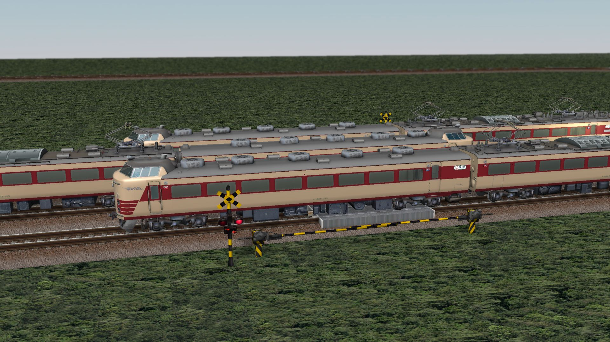
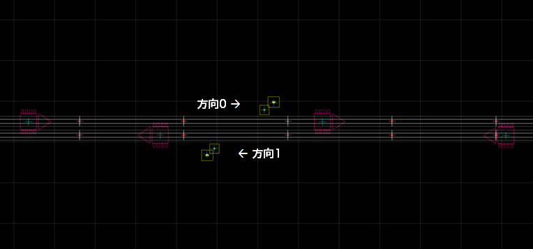
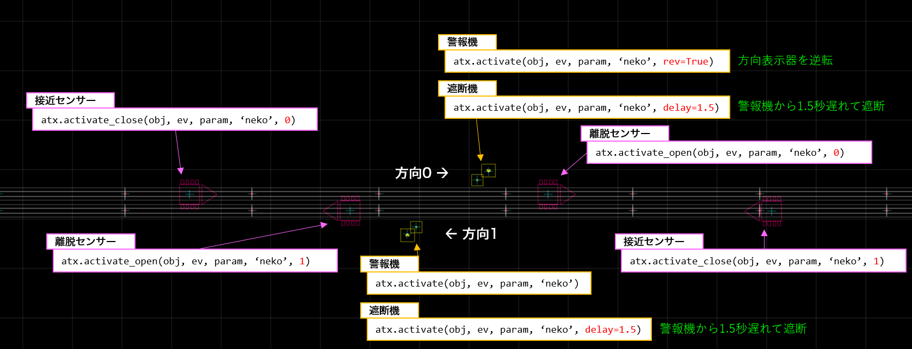
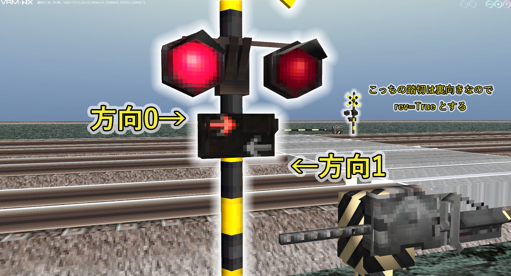
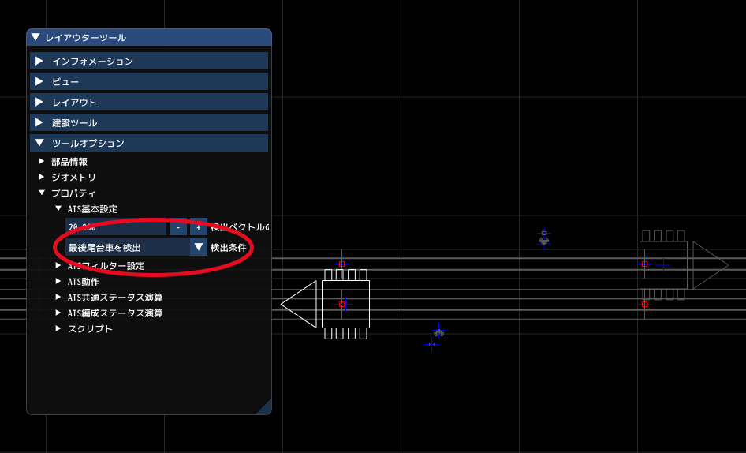

自動踏切のセットアップ¶

atenxa.crossing モジュールでは，センサーを使って踏切を自動で作動させる機能を提供しています。
警報機の鳴動から遮断開始までの時間差や，方向表示器の制御も含めた高い機能を備えています。
組み込みは，各部品にに1行のみとシンプルです。
レイアウトスクリプトの設定¶
下記のようなディレクトリ構成で，レイアウトとatenxaパッケージを保存してください。
YourLayout
├─ atenxa
│ ├ __init__.py
│ └ (以下省略)
└─ yourlayout.vrmnx
レイアウトから，同一ディレクトリからatenxaパッケージを読み込むため，レイアウトスクリプトに以下を記述します。
#LAYOUT
import vrmapi
# 同一ディレクトリのパッケージを優先で読み込む設定
import os, sys
sys.path.insert(0, vrmapi.SYSTEM().GetLayoutDir())
# atenxaのcrossingサブパッケージを，atxという短縮名称でインポート
# 以後，他のオブジェクトのスクリプトからもatxという名前で使えます。
import atenxa.crossing as atx
レイアウト構成¶
サンプルでは，下図のような複線区間の踏切に動作を設定します。 踏切には警報機A（方向表示機つき）と遮断機を設置しました。
列車通過で踏切を開閉する位置に，「接近センサー」と「離脱センサー」を設置します。
ATENXA踏切システムの設定には，各踏切グループに固有の名前か番号を付ける必要があります。
サンプルでは，名前を「ねこ踏切 (neko)」とします。
踏切には，「通過方向」を予め定めておきます。 サンプルでは，左から右に通過するのを「方向0」，右から左に通過するのを「方向1」と決めます。

踏切警報機のセットアップ¶
踏切部品やセンサーへのスクリプトの記述はそれぞれ1行です。イベントハンドラの先頭に，以下の図に示す行をそれぞれ書き込みます。

センサーへの記述は，activate_closeとactivate_openを間違えないようにしてください。以下に詳細を述べます。
踏切警報機（基準方向）¶
方向表示機において，左から右が「方向0」，右から左が「方向1」とするのが基準となっています。

#OBJID=10
import vrmapi
def vrmevent_10(obj,ev,param):
atx.activate(obj,ev,param, "neko")
activate 関数を記述すると，踏切部品をATENXA踏切システムの踏切部品として各種機能をセットアップします。
イベントハンドラが受け取った obj, ev, param をそのまま渡したら，グループの名称 "neko" を設定します。
踏切警報機（逆方向）¶
左向きが「方向0」，右向きが「方向1」となる向きの警報機には，activate関数のrevオプションを有効にします。
#OBJID=12
import vrmapi
def vrmevent_12(obj,ev,param):
atx.activate(obj,ev,param, "neko", rev=True) #方向表示器を逆転
遮断機¶
遮断機は，警報機が鳴り始めて数秒経ってから下がり始めます。このような動作は，activate関数のdelayオプションで有効にします。設定の単位は「秒」です。
#OBJID=14
import vrmapi
def vrmevent_14(obj,ev,param):
atx.activate(obj,ev,param, "neko", delay=1.5) # 1.5秒遅延
センサー部品のセットアップ¶
遮断センサー¶
編成の先頭車輪が通過すると踏切を閉じるセンサーです。踏切の遮断が間に合う程度に，十分手前に設置します。
スクリプトの記述は以下のようになります。
import vrmapi
def vrmevent_23(obj,ev,param):
atx.activate_close(obj, ev, param, "neko", 0) #方向0の進入センサー
activate_close関数の第5引数（direction）で，列車の進入方向が「方向0」か「方向1」かを明示します。
開放センサー¶
列車が踏切を通過し終わったことを検知して，踏切を開けるセンサーです。踏切の直後に設置します。
異なる長さの編成が通過することを想定し，「最後尾台車」の検知で踏切が開くよう設定します。 「ツールオプション」＞「プロパティ」＞「ATS基本設定」において，検出オプションを「最後尾台車を検出」に設定します。

スクリプトには，以下のように記述します。
#OBJID=26
import vrmapi
def vrmevent_26(obj,ev,param):
atx.activate_open(obj,ev,param, "neko", 1) #方向1の退出センサー
これで，スクリプト関係も含めてセットアップは終了です。